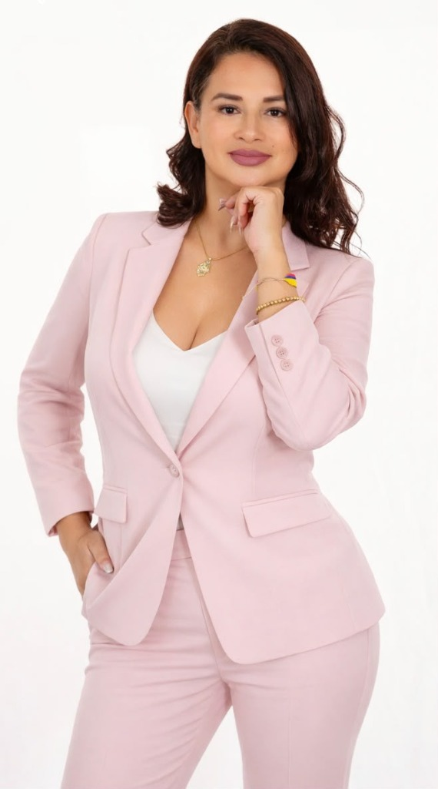

Cami's Lashes Academy
Nuestra Historia: El Renacimiento de la Mirada
Cómo una profunda vocación artesanal forjada en la disciplina, el visagismo y la bioseguridad transformó la estética de pestañas en Puerto Vallarta y construyó la academia de mayor rigor técnico en el Pacífico mexicano.

«El arte de la mirada no admite mediocridad: cada fibra colocada es un pacto sagrado de confianza, salud ocular y autoestima.»
Permítenos presentarte la inspiradora trayectoria detrás de Cami's Lashes Academy, fundada por Camila Marín Ruiz, destacada Master Lash Artist y formadora profesional de la industria de la belleza de la mirada. La enseñanza nunca fue el plan original; fue la consecuencia inevitable de la excelencia. Camila inició su camino en el mundo de la extensión y diseño de pestañas con una visión clara: transformar la estética de la mirada en una profesión rentable, digna y altamente especializada.
A través de años de capacitación continua, perfeccionamiento de técnicas internacionales en congresos de primer nivel y la experimentación rigurosa con formulaciones químicas y curvaturas, desarrolló una metodología pedagógica propia. Observó que el mercado local y nacional sufría de una grave saturación de aplicaciones deficientes, folículos maltratados y falsas promesas de capacitación exprés.
De lo Tecnológico a lo Artesanal
Ante dicha realidad, Camila erigió en el corazón de Versalles, Puerto Vallarta, un santuario de formación donde el lema «De lo tecnológico a lo artesanal» cobra vida. La técnica no se reduce a pegar fibras sintéticas; se trata de una intervención biométrica que armoniza la simetría del rostro, respeta la integridad anatómica de la pestaña natural y potencia la personalidad irrepetible de cada clienta.
Cami's Lashes Academy se ha consolidado como un faro de mentoría integral. Aquí las alumnas no solo aprenden el balance exacto de abanicos, la polimerización del cianoacrilato y los secretos del lifting coreano; aprenden a valorarse como empresarias, a calcular sus costos milimétricos y a edificar negocios sostenibles y prósperos.
Expansión Nacional e Internacional
El impacto pedagógico de la academia trascendió rápidamente las fronteras de Jalisco. A través de Masterclasses especializadas en Guanajuato, León, Guadalajara y la próxima participación en la cumbre internacional de Medellín (Colombia), el método de Camila Marín Ruiz se consolida como referencia iberoamericana en la docencia de la belleza.
Hoy, Cami's Lashes no es únicamente un estudio de renombre en el corredor gastronómico y cosmopolita de Versalles: es una comunidad viva de más de un centenar de graduadas que han encontrado en la mirada su camino hacia la independencia financiera y la autorrealización profesional.